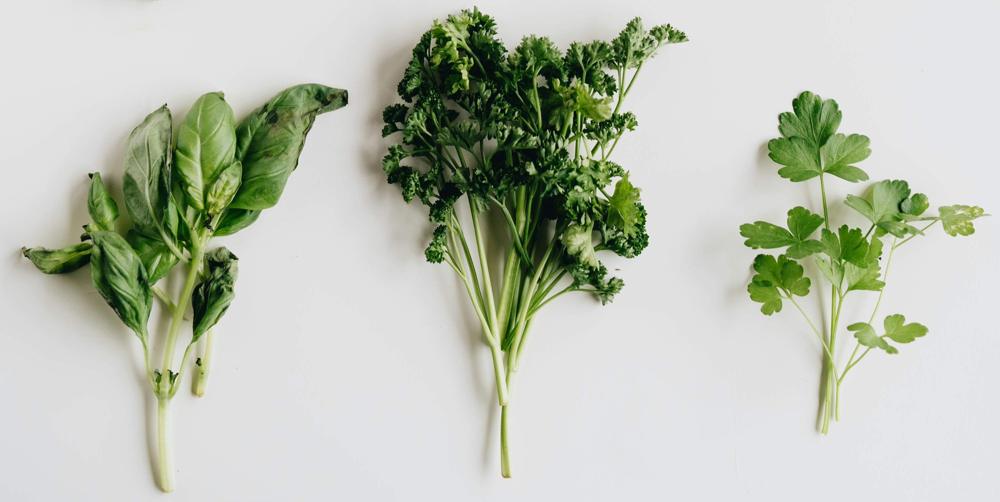
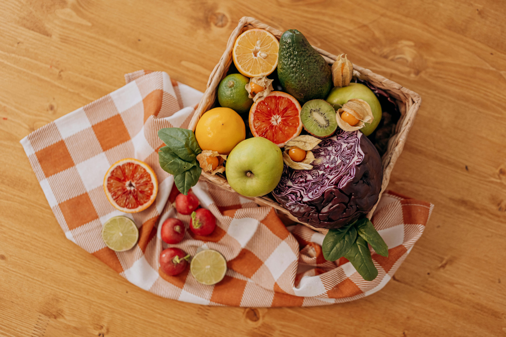
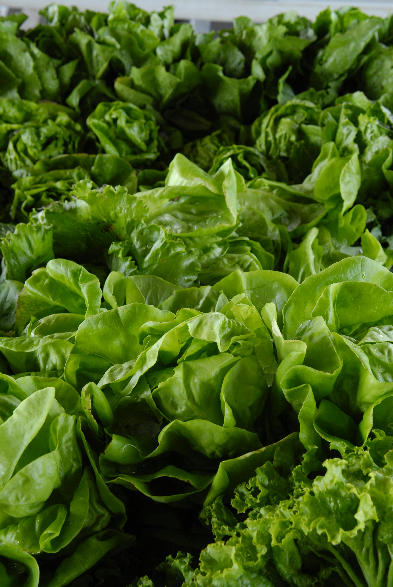

Por Que Cultivar em Casa?
O cultivo em casa ajuda a assegurar uma oferta alimentar de maior qualidade, como alimentos mais frescos e isentos de substâncias tóxicas. É uma prática sustentável que promove a saúde mental, além disso, inspira hábitos mais sustentáveis, contribuindo para um modo de vida mais equilibrado.
O Que Você Pode Cultivar:
Ervas

Cultivar ervas frescas em casa é uma maneira sustentável e econômica de ter temperos sempre à mão, além de proporcionar um aroma agradável ao ambiente. Veja algumas opções:
- Manjericão: Prefere sol pleno (6-8 horas de luz direta por dia). Solo bem drenado e fértil. A temperatura ideal para o cultivo é entre 20°C e 30°C. O manjericão deve ser colhido após 60 a 90 dias de plantio. Regue regularmente, mantendo o solo úmido, mas sem encharcar.
- Hortelã: Prefere sombra parcial, mas também pode crescer em sol direto. Solo bem drenado e úmido. Temperaturas ideais entre 15°C e 25°C. A hortelã pode ser colhida após 60 a 90 dias de plantio. Regue frequentemente para manter o solo úmido.
- Alecrim: Prefere sol pleno e solo bem drenado. A temperatura ideal para o cultivo do alecrim é entre 20°C e 25°C. Pode ser colhido entre 90 a 120 dias após o plantio. Regue moderadamente, evitando o encharcar.
- Salsa: Prefere sol parcial e solo bem drenado. Temperaturas ideais entre 15°C e 20°C. A salsa pode ser colhida após 60 a 80 dias de plantio. Regue moderadamente, mantendo o solo úmido.
- Cebolinha: Prefere sol pleno e solo bem drenado. Temperaturas ideais entre 15°C e 25°C. A cebolinha pode ser colhida após 30 a 60 dias de plantio. Regue regularmente para manter o solo úmido.
- Sálvia: Prefere sol pleno e solo bem drenado. Temperaturas ideais entre 20°C e 25°C. A sálvia pode ser colhida de 80 a 120 dias após o plantio. Regue moderadamente, evitando o excesso de água.
- Tomilho: Prefere sol pleno e solo bem drenado. A temperatura ideal para o cultivo do tomilho é entre 15°C e 25°C. Pode ser colhido após 90 a 120 dias de plantio. Regue moderadamente.
- Orégano: Prefere sol pleno e solo bem drenado. A temperatura ideal para o cultivo do orégano é entre 18°C e 25°C. O orégano pode ser colhido entre 60 a 90 dias após o plantio. Regue moderadamente, evitando o encharcar.
Frutas

Cultivar frutas garante alimentos frescos e livres de agrotóxicos, contribuindo para uma alimentação mais saudável e saborosa. Veja algumas opções:
- Morangos: Preferem sol pleno (6-8 horas de luz direta por dia). Solo bem drenado e rico em matéria orgânica. A temperatura ideal para o cultivo é entre 15°C e 25°C. Os morangos podem ser colhidos de 90 a 120 dias após o plantio. Regue moderadamente e evite encharcar o solo.
- Amoras: Preferem sol pleno, mas podem tolerar sombra parcial. Solo bem drenado e rico em matéria orgânica. Temperaturas ideais entre 18°C e 25°C. A colheita pode ser feita após 1 a 2 anos de plantio. Regue regularmente, mas evite deixar o solo encharcado.
- Limões: Precisam de sol pleno e solo bem drenado, leve e arenoso. Temperaturas ideais entre 20°C e 30°C. A colheita pode ser feita entre 6 meses e 1 ano após o plantio. Regue com frequência, mas sem encharcar o solo. O limoeiro também se beneficia de adubação periódica.
- Acerola: Prefere sol pleno e solo bem drenado, com boa matéria orgânica. Temperaturas ideais entre 25°C e 35°C. A acerola começa a produzir frutos após 1 a 2 anos de plantio. Regue frequentemente, especialmente durante os períodos mais secos, mas evite encharcar o solo.
- Jabuticaba: Prefere sol pleno, mas pode tolerar sombra parcial. Solo bem drenado e rico em matéria orgânica. Temperaturas ideais entre 20°C e 28°C. A jabuticabeira leva de 3 a 5 anos para começar a produzir frutos. Regue moderadamente, especialmente nos meses mais quentes.
- Figo: Precisam de sol pleno e solo bem drenado. A temperatura ideal para o cultivo do figo é entre 20°C e 30°C. Os figos podem ser colhidos entre 90 a 150 dias após o plantio. Regue moderadamente e com mais frequência durante os períodos de calor intenso.
- Romã: Prefere sol pleno e solo bem drenado. O cultivo é ideal em temperaturas entre 20°C e 30°C. A colheita pode ser feita de 6 a 9 meses após o plantio, dependendo da variedade. A romã precisa de pouca irrigação, sendo suficiente regar durante os períodos secos.
- Jabuticaba Amarela: Prefere sol pleno, mas pode tolerar sombra parcial. Solo bem drenado e rico em matéria orgânica. Temperaturas ideais entre 18°C e 25°C. A colheita pode ser feita entre 90 a 120 dias após o plantio. Regue moderadamente.
Vegetais

Cultivar suas próprias verduras permite o consumo de alimentos ricos em nutrientes, reduz o desperdício e promove uma conexão mais próxima com a natureza. Veja algumas opções:
- Alface: Prefere sol parcial ou pleno. Solo bem drenado e rico em matéria orgânica. Temperaturas ideais entre 15°C e 20°C. A alface pode ser colhida entre 30 a 60 dias após o plantio. Regue frequentemente, mantendo o solo úmido.
- Couve: Prefere sol pleno e solo bem drenado. Temperaturas ideais entre 15°C e 20°C. A couve pode ser colhida de 60 a 90 dias após o plantio. Regue regularmente, mantendo o solo úmido.
- Espinafre: Prefere sol parcial e solo bem drenado. Temperaturas ideais entre 15°C e 20°C. O espinafre pode ser colhido após 30 a 60 dias de plantio. Regue regularmente, mantendo o solo úmido.
- Rúcula: Prefere sol pleno ou sombra parcial. Solo bem drenado e rico em matéria orgânica. Temperaturas ideais entre 15°C e 20°C. A rúcula pode ser colhida entre 30 a 60 dias após o plantio. Regue regularmente, mantendo o solo úmido.
- Acelga: Prefere sol parcial e solo bem drenado. Temperaturas ideais entre 15°C e 20°C. A acelga pode ser colhida de 50 a 70 dias após o plantio. Regue frequentemente, mantendo o solo úmido.
- Agrião: Prefere sol parcial e solo bem drenado. Temperaturas ideais entre 10°C e 20°C. O agrião pode ser colhido de 30 a 45 dias após o plantio. Regue frequentemente, mantendo o solo úmido.
- Mostarda: Prefere sol pleno ou sombra parcial. Solo bem drenado e rico em matéria orgânica. Temperaturas ideais entre 15°C e 25°C. A mostarda pode ser colhida entre 30 a 60 dias após o plantio. Regue regularmente.
- Almeirão: Prefere sol pleno ou sombra parcial. Solo bem drenado e rico em matéria orgânica. Temperaturas ideais entre 15°C e 20°C. O almeirão pode ser colhido entre 30 a 60 dias após o plantio. Regue regularmente.